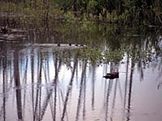

A forest is a highly complex, constantly changing environment made up of a variety of living and non-living things. Just as each individual part of a tree is vital to the life and growth of a single tree, so all components of the forest community are essential to its health and well-being.
| Abiotic (non-living things) | Biotic (living things) | ||
|
|
Biotic components are in constant interaction with the abiotic components. For example, soil is comprised of tiny rock particles, water, microorganisms, worms, gases and so on. Plants (producers) require soil and its nutrients, water, gases and light in order to grow. Animals (consumers) require plants for energy since they are unable to store the sun's energy directly. |

On a more complex and far-reaching level, tree roots and tissues absorb and gradually release a great deal of water. Some of this water is used by the tree to create its own food, but the majority is released into the earth's atmosphere, cooling the air and contributing to the hydrologic (water) cycle. This water is eventually returned to earth in the form of precipitation, which is needed by all life to survive. Thus, the forest environment is a community of interrelationships. All plant and animal life is interdependent and one part of nature is always providing for the habitat needs of another. |
 The interactions between biotic and abiotic components in forest ecosystems are numerous and fascinating. They demonstrate the interdependence of life and help us understand the importance of caring for and managing the precious forest resource. |